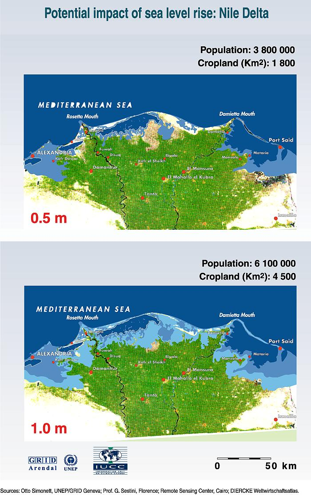

|
Vital
Climate Graphics : Potential Impacts of Climate
Change 33. Rising sea level would destroy weak parts of the sand belt, which is essential for the protection of lagoons and the low-lying reclaimed lands. The impacts would be very serious: One third of Egypt's fish catches are made in the lagoons. Sea level rise would change the water quality and affect most fresh water fish. Valuable agricultural land would be innundated. Vital, low-lying installations in Alexandria and Port Said would be threatened. Recreational tourism beach facilities would be endangered and essential groundwater would be salinated. Dykes and protective measurements would probably prevent the worst flooding up to a 50 cm sea level rise. However, it would cause serious groundwater salination and the impact of increasing wave action would be serious. |
||
|
Next: Changes on cereal production under three different GCM equilibrium scenarios Vital Climate Graphics : Potential Impacts of Climate Change |
||
|
United Nations Environment Programme / GRID-Arendal Text and graphics may be reproduced in whole or in part and in any form for educational or non-profit purposes, provided that credit is given to the source. |
||